ไม้พลองด้ามไม้กวาด ไม้พลองด้ามไม้กวาด | 1 | 61 | ไม่มีธาตุ | หุ่นไล่กาผีสิง 0.25% |
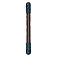 ไม้พลองนักพรต | 1 | 57 | ไม่มีธาตุ | อาวุธเริ่มต้นของสาย (ได้ตอนเปลี่ยนอาชีพ) |
 ไม้พลองเสาเต็นท์ ไม้พลองเสาเต็นท์ | 5 | 63 | ไม่มีธาตุ | หมูป่าเขี้ยวตัน ร่างเขาเงิน 0.25% |
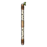 ไม้พลองไม้เบิร์ช | 9 | 65 | ไม่มีธาตุ | ค้างคาวรัตติกาล ร่างแดงเลือดนก 0.25% |
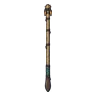 ไม้พลองหัวหน้าหนูน้ำ | 12 | 76 | น้ำ | หนูน้ำจ่าฝูง ร่างขนคราม 0.06% |
 ไม้พลองหนอนผีเสื้อ ไม้พลองหนอนผีเสื้อ | 14 | 58 | ลม | ผีเสื้อราตรีเรืองแสง 0.12% |
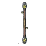 ไม้พลองโหลหิ่งห้อย | 16 | 55 | ศักดิ์สิทธิ์ | ผีเสื้อราตรีเรืองแสง 0.06% |
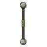 ไม้พลองสไลม์หิน | 18 | 58 | ดิน | สไลม์หินตะไคร่ 0.12% |
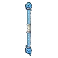 ไม้พลองสไลม์น้ำใส | 21 | 55 | น้ำ | สไลม์น้ำใส 0.06% |
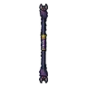 ไม้พลองราชาค้างคาวห้อยหัว | 25 | 76 | มืด | ราตรีราชาค้างคาว 0.5% |
 ไม้พลองเหล็กรัด ไม้พลองเหล็กรัด | 26 | 103 | ไม่มีธาตุ | ผู้ช่วยนักดาราศาสตร์กลวง 0.25% |
 ไม้พลองกระดูกคู่ ไม้พลองกระดูกคู่ | 30 | 100 | ไม่มีธาตุ | โครงกระดูกทหาร 0.25% |
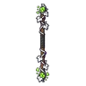 ไม้พลองเถาพิษ | 32 | 88 | พิษ | ดอกแม่พิษ 0.06% |
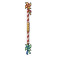 ไม้พลองกังหันกระดาษ | 33 | 92 | ไม่มีธาตุ | มดระเบิด 0.12% |
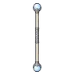 ไม้พลองหินจันทร์ | 36 | 88 | ศักดิ์สิทธิ์ | คางคกพองพิษ 0.06% |
 ไม้พลองรอยเท้าหมาป่า ไม้พลองรอยเท้าหมาป่า | 37 | 98 | ไม่มีธาตุ | ตุ่นขุดผลึก 0.25% |
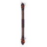 ไม้พลองฟืนคุ | 39 | 92 | ไฟ | อินทรีพายุ ร่างฟ้าผ่า 0.12% |
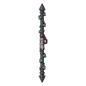 ไม้พลองรั้วสุสาน | 42 | 92 | ไม่มีธาตุ | กล้องดูดาวเดินได้ 0.12% |
 ไม้พลองเห็ดราชาคู่ ไม้พลองเห็ดราชาคู่ | 44 | 120 | พิษ | หมอมอร์โรว์ 0.5% |
 ไม้พลองหัวอินทรีคู่ ไม้พลองหัวอินทรีคู่ | 45 | 92 | ลม | นกกระจอกพายุ 0.12% |
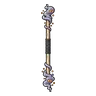 ไม้พลองภูตเถ้า | 46 | 88 | วิญญาณ | ภูตเถ้าถ่าน 0.06% |
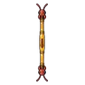 ไม้พลองอำพันนางพญามด | 50 | 120 | ดิน | รังนางพญามด 0.5% |
 ไม้พลองไม้เหล็ก ไม้พลองไม้เหล็ก | 52 | 141 | ไม่มีธาตุ | เต่าทองพิษ 0.25% |
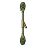 ไม้พลองพายกัปปะ | 56 | 137 | น้ำ | หยดหมึกแตกตัว 0.25% |
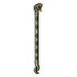 ไม้พลองหนังงูหนอง | 59 | 126 | พิษ | งูหนองพิษ 0.12% |
 ไม้พลองผีนักเดินทาง ไม้พลองผีนักเดินทาง | 60 | 133 | วิญญาณ | ผีนักเดินทาง ร่างไฟอุ่น 0.5% |
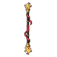 ไม้พลองเปลวไฟร่ายรำ | 61 | 121 | ไฟ | แมงป่องยิงพิษ 0.06% |
 ไม้พลองหินโกเลมซ้อน ไม้พลองหินโกเลมซ้อน | 63 | 126 | ไม่มีธาตุ | หุ่นไร้หน้า 0.12% |
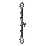 ไม้พลองโซ่อัศวินกระดูก | 67 | 126 | มืด | อัศวินกระดูก 0.12% |
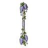 ไม้พลองวิสทีเรียราตรี | 68 | 121 | ลม | ใบมีดกระดาษ 0.06% |
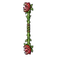 ไม้พลองดอกกินคนคู่ | 70 | 126 | ดิน | ดอกไม้กินคน 0.12% |
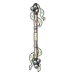 ไม้พลองกระดิ่งวิญญาณ | 72 | 121 | วิญญาณ | ผู้จุดตะเกียงรุ่นแรก 0.06% |
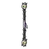 ไม้พลองกะโหลกราชาสุสาน | 75 | 164 | มืด | บัลลังก์ราชาสุสาน 0.5% |
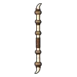 ไม้พลองงาช้างโบราณ | 76 | 179 | ดิน | ลูกช้างขนยาว ร่างหิมะ 0.5% |
 ไม้พลองตั๊กแตนหางม้า ไม้พลองตั๊กแตนหางม้า | 76 | 160 | ลม | ตั๊กแตนตำข้าวหางม้า ร่างม่วง 0.24% |
 ไม้พลองภูตน้ำล้นประตู ไม้พลองภูตน้ำล้นประตู | 76 | 153 | น้ำ | ภูตน้ำล้นประตู 0.06% |
 ไม้พลองรากไม้ยักษ์ ไม้พลองรากไม้ยักษ์ | 78 | 169 | ดิน | ต้นไม้ยักษ์โบราณ 0.25% |
 ไม้พลองเหล็กกล้าปรมาจารย์ ไม้พลองเหล็กกล้าปรมาจารย์ | 81 | 174 | ไม่มีธาตุ | แร็พเตอร์ใบไม้ ร่างขนนก 0.25% |
 ไม้พลองพายุหิมะ ไม้พลองพายุหิมะ | 84 | 153 | น้ำ | พลีซิโอซอร์ 0.06% |
 ไม้พลองเหล็กเผาไฟ ไม้พลองเหล็กเผาไฟ | 85 | 179 | ไฟ | แมงป่องแดง ร่างทองแดง 0.25% |
 ไม้พลองนกกระสาเงา ไม้พลองนกกระสาเงา | 88 | 160 | มืด | กวางไร้แสง 0.12% |
 ไม้พลองพายุหมุน ไม้พลองพายุหมุน | 90 | 160 | ลม | หุ่นระฆัง 0.12% |
 ไม้พลองรุ้งกลางคืน ไม้พลองรุ้งกลางคืน | 92 | 153 | ศักดิ์สิทธิ์ | ดาวตกจิ๋ว 0.06% |
 ไม้พลองแก้ววิญญาณ ไม้พลองแก้ววิญญาณ | 94 | 153 | วิญญาณ | ผู้จุดตะเกียงรุ่นแรก ร่างทอง 0.06% |
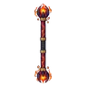 ไม้พลองกรงเล็บมังกรลาวา | 96 | 209 | ไฟ | หัวใจมังกรลาวา 0.5% |
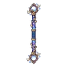 ไม้พลองธารดาว | 99 | 226 | น้ำ | ดรอปทั่วโลก Lv 90+ |